Placeholder (you should not see this)
Social network analysis
class notes
Introduction
Networks are complex structures used to represent relations. In math they are studied as graphs, but they can be used in multiple ways. As a way to represent knowledge, to define a model, as database systems, or to represent information. Many machine learning models are built as graphs: Neural networks, decision trees, and even causal models. In this course, we will focus on networks for social science. Here, we will use graphs to represent data about social relations between entities (people, institutions, countries, etc.).
Elements of a network
In order to work with networks, we first need to go through some basic definitions.
- A network —or graph— is composed by nodes —or vertex— and links —or edges—1. Nodes represent the entities of the problem, and links their relations. Mathematically, we can define it as:
\[ G=(V, E) \] Where \(V\) is the set of nodes, and \(E\) the set of links.
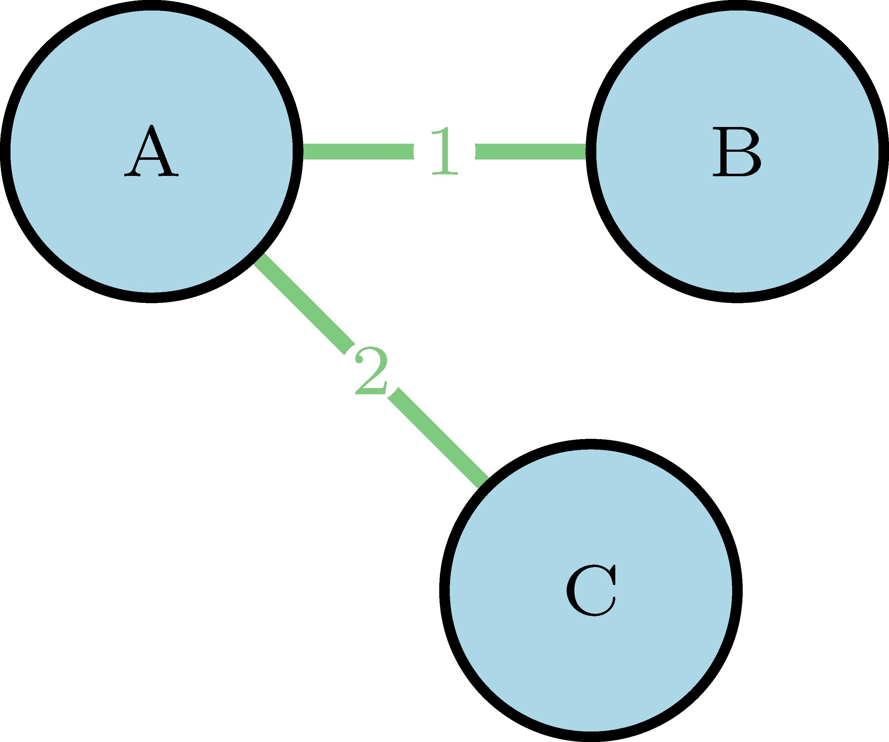
A node that has a link that points to itself is called a loop.
A walk is a sequence of nodes and links, like
(B, 1, A, 2, C)in our simple network, where the links between nodes are those that connect them, so it can also be represented as(1, 2).A path is a walk where all the links are different (it does not go through the same link twice).
The length of a path is its number of links, and the shortest path2 between two nodes is the one that connects them and has the least number of links.
The distance3 between two nodes is given by the length of the shortest path that connects them.
A sub-graph \(G'=(V', E')\) is a subset of \(G\) where \(V'\) is a subset of \(V\) and \(E'\) is a subset of \(E\) that only contains links that connect nodes in \(V'\).
An ego network is obtained when we take a node and build the sub-graph that contains all the nodes that are connected to it, and all the respective links that connect them.4
Two nodes are connected if there is path between them. If all the nodes of the network are connected, then it is a connected network.
Placeholder (you should not see this)
- If the network is not connected, then it can have components: sub-graphs of connected nodes. These may have different sizes, and the most important is the giant component: the one with he highest number of nodes.
Types of networks
Weighted or unweighted networks
The relation between two nodes can either be dichotomous or quantitative. For example, a link can represent co-authorship – given two authors, they either co-authored a paper or not– and for it we might use an unweighted network. But a link can also represent the number of papers two co-authors wrote together, and in this case we might use a weighted network. A weighted network can be represented as an unweighted one for those relations above a given threshold.
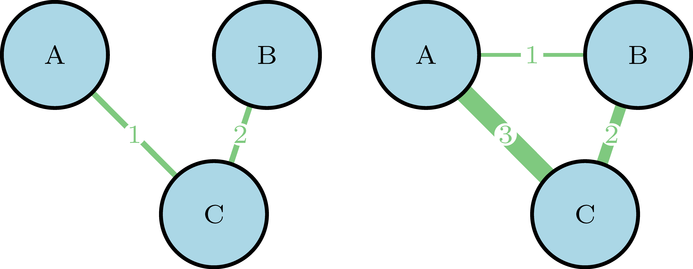
Directed or undirected networks
Connections can have a direction5. For example, in Twitter, B can follow A, who follows C, that also follows A back. While in Facebook, the connections are defined as friendship, where there is no direction.
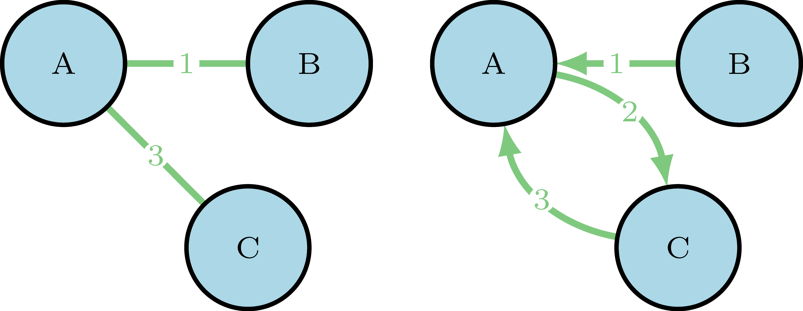
Bipartite networks
Networks can encode complex relations between different types of entities. For example, if we want to represent people that belongs to different institutions, we can have nodes that represent people {\(A_1,A_2,...,A_5\)}, and other type of nodes that represent institutions {\(I_1,I_2,...,I_4\)}, and here the links represent the relation of belonging.
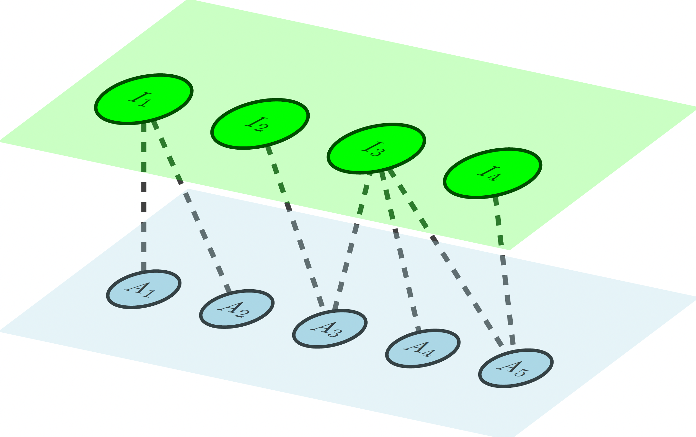
This type of networks can also be simplified using projection, where we keep only one type of node. In the example above, we can relate institutions to each other if they have people in common, and link people if they belong to the same institution:
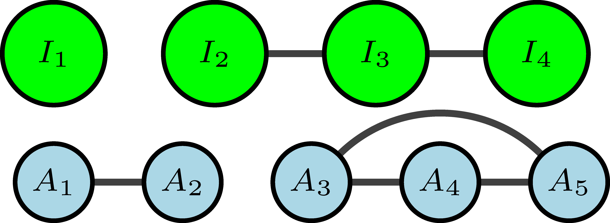
Dynamic networks
If we want to use network analysis to study a social process, a static representation can fall short to understand how the social interactions evolve over time. For this, we can also think networks as a dynamic process, where new nodes enter, old nodes disappear, and links change over time.
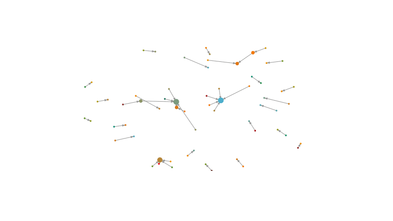
Network representation and metrics
- There are different ways to represent a network numerically. This is important because it is how we can store the data, and it will define how we can compute metrics to understand the network behavior.
- Social Network Analysis (SNA) metrics can be divided into those that describe the network topology6 at an aggregate level, and those that describe the relevance of a specific node.
Lets take a small random network and see how it can be represented and which metrics can be used to describe it:
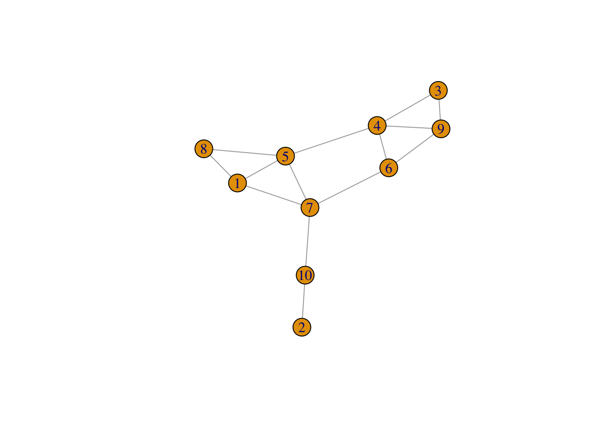
- The adjacency matrix represents nodes as rows and columns, and the existence (or not) of a link between nodes \(i\) and \(j\) as a 1 (or 0)7 in the row \(i\) and column \(j\). The adjacency matrix is normally denoted as \(A\).
- If the network is undirected this matrix will be symmetrical, while if it is directed, it will probably not be.
1 2 3 4 5 6 7 8 9 10
1 0 0 0 0 1 0 1 1 0 0
2 0 0 0 0 0 0 0 0 0 1
3 0 0 0 1 0 0 0 0 1 0
4 0 0 1 0 1 1 0 0 1 0
5 1 0 0 1 0 0 1 1 0 0
6 0 0 0 1 0 0 1 0 1 0
7 1 0 0 0 1 1 0 0 0 1
8 1 0 0 0 1 0 0 0 0 0
9 0 0 1 1 0 1 0 0 0 0
10 0 1 0 0 0 0 1 0 0 0- Although adjacency matrices are really intuitive, they are not really efficient. Networks are usually sparse, so most of the matrix will be filled with zeros. If we work with large networks, with millions of nodes, this is a very costly way to represent the data.
- In practice, there are very few links with respect to all the possible combinations. If there are few links per node, a much more efficient way to store the data is to build an edge list that stores the name of the two nodes that a link connects.
[,1] [,2]
[1,] 3 4
[2,] 1 5
[3,] 4 5
[4,] 4 6
[5,] 1 7
[6,] 5 7
[7,] 6 7
[8,] 1 8
[9,] 5 8
[10,] 3 9
[11,] 4 9
[12,] 6 9
[13,] 2 10
[14,] 7 10- We can also build an adjacency list that lists all nodes, and for each of them, the nodes to which it is connected.
$`1`
+ 3/10 vertices, named, from 73354db:
[1] 5 7 8
$`2`
+ 1/10 vertex, named, from 73354db:
[1] 10
$`3`
+ 2/10 vertices, named, from 73354db:
[1] 4 9Node level metrics
A key concept in network analysis is centrality. It refers to the importance of a node within the network. Generally speaking, if a node is well connected, it can exercise more influence over the network.
Let’s imagine our network is composed of a group of 10 people. Links represent friendship and trust between them. If we want to know how fake news are spread across the network, centrality measures can help us to understand what would happen if any of the nodes start a rumor8.
Who do you think that can be more effective spreading the misinformation? Node 4, 7 or 2?
There are many ways to define the influence of a node, and which one is the best depends on the research question.
- Degree centrality counts the number of connections of a node. It is one of the most common metrics.
Warning: Using the `size` aesthetic in this geom was deprecated in ggplot2 3.4.0.
ℹ Please use `linewidth` in the `default_aes` field and elsewhere instead.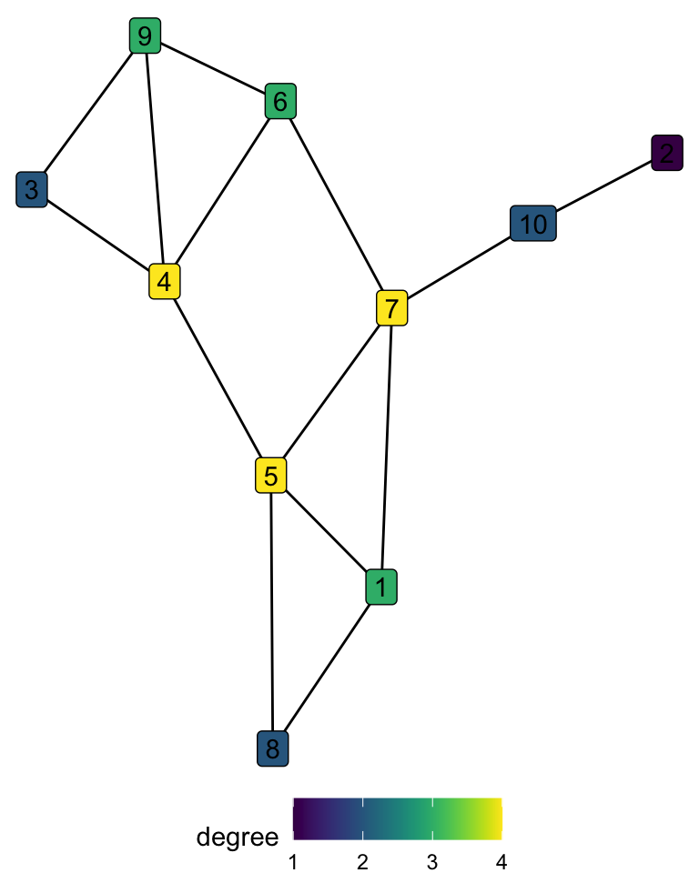
# A tibble: 10 × 2
node degree
<int> <dbl>
1 1 3
2 2 1
3 3 2
4 4 4
5 5 4
6 6 3
7 7 4
8 8 2
9 9 3
10 10 2We can see that by degree centrality nodes 4, 5, and 7 are considered equally important.
- Closeness centrality is the average closeness9 between the node and all the other nodes in the graph. The intuition is that the closer it is to all other nodes, the more central a node is.
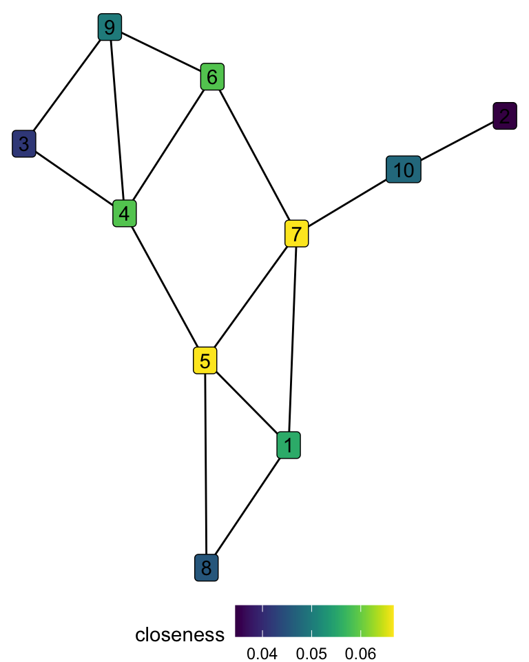
\[ closeness(i) = \frac{N-1}{\sum_{j\neq i}d_{i,j}} \]
# A tibble: 10 × 2
node closeness
<int> <dbl>
1 5 0.067
2 7 0.067
3 4 0.059
4 6 0.059
5 1 0.056
6 9 0.05
7 10 0.048
8 8 0.045
9 3 0.042
10 2 0.034When we consider closeness, node 4 is not as important as in degree centrality. As it is not connected to node 7, its distance to nodes 10 and 2 is rather long.
- Betweenness centrality measures a specific type of influence over the network. It counts how many times a node is in the shortest path of other nodes. The influence here implies that, in order to get from one point of the network to another, you must go through this specific node. A central node in this metric behaves as a bridge between others. It can be formally defined as:
\[ betweenness(i)= \sum_{j,k\neq i}\frac{b_{jik}}{b_{jk}} \]Where \(b_{jk}\) are all the shortest paths between nodes \(j\) and \(k\), and \(b_{jik}\) are all of those shortest paths that go through \(i\).
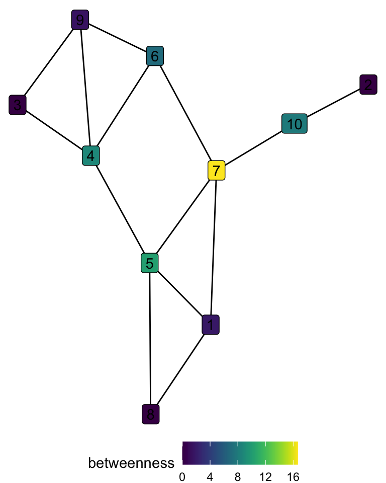
# A tibble: 10 × 2
node betweenness
<int> <dbl>
1 7 16.7
2 5 10.2
3 4 8.83
4 10 8
5 6 7
6 1 1.83
7 9 1.5
8 2 0
9 3 0
10 8 0 For betweenness, the node 7 is the most important by far, as it is the only bridge to nodes 10 and 2, and one of the two connections between nodes {5, 1, 8} and nodes {6, 9, 4, 3}.
- Eigen centrality is based on the idea that not only does it matter how many connections a node has, but also the centrality of the nodes with which the node is connected. A node can be connected to many others, but if those nodes are only connected to the first one, the influence of the node in the network will be limited.
This is a recursive problem, as the centrality can be defined as
\[ x_i = \kappa^{-1} \sum_{\text{nodes j connected to i}}x_j \]
The centrality of the node \(x_i\) is some proportion of the centrality of its neighbors (\(\kappa\) being a proportionality constant).
We can use the adjacency matrix \(A\) to redefine this problem, given that if the nodes are connected, \(A_{ij}\) is 1, and 0 otherwise.
\[ x_i = \kappa^{-1} \sum_{j}^nA_{ij}x_j \] It is called eigen centrality, because the solution to this equation is the eigen vector of the adjacency matrix10.
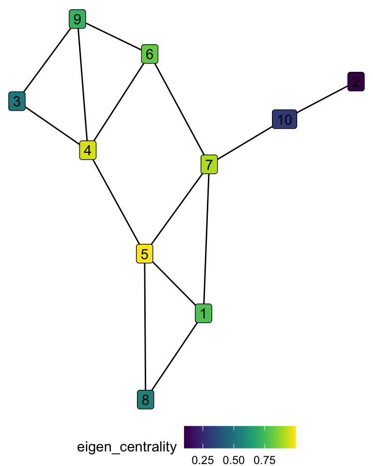
# A tibble: 10 × 2
node eigen_centrality
<int> <dbl>
1 5 1
2 4 0.96
3 7 0.91
4 6 0.81
5 1 0.77
6 9 0.72
7 8 0.56
8 3 0.52
9 10 0.32
10 2 0.1 When we consider eigen centrality, node 5 is more important than node 7. This happens because node 5 is connected to both nodes 4 and 7, which are the two following nodes in importance, while nodes 4 and 7 are not connected between them.
Network level metrics
- Size: refers to the number of nodes or links in the network.
- The diameter is the distance between the two most distant pair of nodes11 in the network.
- Density/sparsity: the density of the network is the ratio between the number of existing edges and all the possible edges that a network with the same number of nodes can have.
- The average degree is simply the average degree centrality of all nodes.
- Clustering coefficient: it shows how much the nodes are locally cohesive. Each node has a neighborhood that consists of all the nodes that are connected to it. The clustering coefficient shows how much the nodes in the same neighborhood are also connected between themselves. It is computed for each node as the ratio between the existing connections among its neighbors, and the total possible connections. After this, we can average the clustering coefficient of all nodes to get the value for the network level.
- Assortativity measures how much nodes with a high degree tend to be connected between each other. It can be operationalized as the degree-correlation among neighbors. Do central nodes tend to connect more to other central nodes? or they tend to relate with less central nodes?
Discussions
Why does the rich get richer?
The preferential attachments mechanism for building networks is an interesting model to rethink inequalities. The time component allows to think how if a small difference happens repeatedly over time, and has a cumulative nature, it can create an outcome with extreme inequalities. This model also shows that those who enter first to the system of accumulation already have a unbeatable advantage with respect to those that enter afterwards.
Income has such cumulative mechanism. Money makes money. If a group of the population was systematically deprived for generations, even if there seems to be equal opportunities at some point in time, the cumulative nature of income will continue to affect that group. This is why colorblind policies are not enough, and without restorative actions reaching equality is impossible.

Re-discussing homophily
Homophily is one of the biggest sociological ideas that came up from network studies. A classical example has always been the friendship network in a US high school, which shows how black and white kids tend to play with other kids that share their identity (Bearman, Moody, and Stovel 2002). Nevertheless, this concept is also problematic, and without enough care it can foster misleading conclusions.
When we talk about identities, there are privileged and excluded populations. The concept of homophily equas all groups to a single dynamic, when in reality there are different phenomena happening for different groups.
The empirical observation of a high modularity needs to be properly contextualized. An extreme example would be the residential segregation in US. In the 30’s, the Federal Housing Administration made public housing projects exclusively for white people. If we would measure the racial segregation by neighborhoods at that time, we could think that both black and white people showed homophily behaviors. But black people did not had a choice, as they were excluded from white neighborhoods. The reasons behind the behavior of each group are strikingly different, and modularity alone cannot capture that complexity.
References
Bearman, Peter Shawn, James Moody, and Katherine Stovel. 2002. “Chains of Affection: The Structure of Adolescent Romantic and Sexual Networks.” https://doi.org/10.7916/D83R10RS.
Blondel, Vincent D., Jean-Loup Guillaume, Renaud Lambiotte, and Etienne Lefebvre. 2008. “Fast Unfolding of Communities in Large Networks.” Journal of Statistical Mechanics: Theory and Experiment 2008 (10): P10008. https://doi.org/10.1088/1742-5468/2008/10/P10008.
Conover, Michael, Jacob Ratkiewicz, Matthew Francisco, Bruno Goncalves, Filippo Menczer, and Alessandro Flammini. 2011. “Political Polarization on Twitter.” Proceedings of the International AAAI Conference on Web and Social Media 5 (1): 89–96. https://doi.org/10.1609/icwsm.v5i1.14126.
González, Pablo A. 2016. “Jugada preparada | El Gato y La Caja.” https://elgatoylacaja.com/jugada-preparada.
Newman, M. E. J. 2006. “Modularity and Community Structure in Networks.” Proceedings of the National Academy of Sciences 103 (23): 8577–82. https://doi.org/10.1073/pnas.0601602103.
Pons, Pascal, and Matthieu Latapy. 2005. “Computing Communities in Large Networks Using Random Walks.” In, edited by pInar Yolum, Tunga Güngör, Fikret Gürgen, and Can Özturan, 284–93. Lecture Notes in Computer Science. Berlin, Heidelberg: Springer. https://doi.org/10.1007/11569596_31.
Ribeiro, Manoel Horta, Pedro H. Calais, Virgílio A. F. Almeida, and Wagner Meira Jr. n.d. “"Everything i Disagree with Is #FakeNews": Correlating Political Polarization and Spread of Misinformation.” https://doi.org/10.48550/arXiv.1706.05924.
Footnotes
The differences in the vocabulary are due to the usages of the different scientific communities that use networks. Graph theory is a sub-field of math, while networks are used in other disciplines like computer science or sociology.↩︎
There can be more than one shortest path between a pair of nodes.↩︎
If there is no path between the two nodes, we can say that the distance is \(\infty\).↩︎
We can also build the ego network that contains all the nodes at a distance of 2, 3, etc.↩︎
This changes a little the definition of walks and paths, as they now need to follow the direction of links. Also the distance between two nodes can be asymmetrical.↩︎
How nodes and links are arranged globally.↩︎
In weighted networks, 0 and 1 can be replaced with any continuous scale.↩︎
This same kind of analysis can be made for the spread of diseases, political beliefs, among many different research questions.↩︎
Closeness is the opposite of the length of the shortest path (1/distance)↩︎
In algebra this is defined as \(Ax=\lambda x\), where \(\lambda\) is the eigen value and \(x\) the eigen vector that solve this equation. For the scope of this class, we can just think that this gives us the solution of our recursive problem.↩︎
The distance between two pair of nodes is their shortest paths, so the diameter of the network is the largest of all the shortest paths.↩︎
“Six degrees of separation”: is the idea that all people are six or fewer social connections away from each other. Although this number is somehow forced, in Facebook the average distance between any pair of users is 5.73, and in twitter 4.67.↩︎
Social networks
Random networks
Networks are complex structures. There are no simple tests like in descriptive statistics that we can use to check if a network follows a property, but random networks can be used to compare some properties. Random networks are generative models, where we can specify some parameters like the number of nodes, edges, or the probability of a link between nodes, and a network is built following a specific algorithm.
Preferential attachment model
These models can also help us infer which are the evolutive properties of a network. For example, the preferential attachment model iteratively adds new nodes to the network. This new nodes have a probability to connect with old nodes that is given by the degree of the old nodes. This iterative process recreates the rich gets richer effect.
One type of preferential attachment model is the Barabási-Albert (BA) model. The algorithm of the BA model works as follows:
\[ p_{i}\sim k_i^\alpha \]Where \(k_i\) is the degree of the node \(i\) and \(\alpha\) is a parameter that defines the power of the preferential attachment.
Let’s see how this process looks like:
Let’s see the degree distribution of such type of networks:
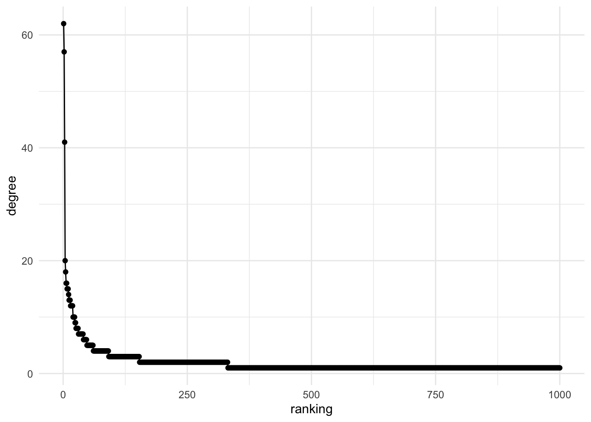
The centrality follows a power-law distribution, where a few nodes have a really high centrality, while the great majority has a low centrality.
Small world
Another property that is commonly found in real-world networks is the small world phenomena: as networks get bigger in number of nodes, the average distance of the network only increases mildly. Huge networks with millions of nodes have very short distances between any pair of nodes, even if it is sparsely connected12.
This happens because of a combination of clustering and power-law degree distributions: there are a few highly connected nodes that guarantee the more distant connections, and then the densely connected neighborhoods easily connect the node with that highly connected node in its neighborhoods.
Communities
Detecting communities within a network is a common task in SNA.
Finding Twitter communities, for example, can be the key for understanding the patterns of political polarization (Conover et al. 2011). A community in a network is a sub-graph in which the nodes are densely connected within them, and sparsely connected to nodes outside their community.
It is the same concept as clustering, but the techniques used to detect them are different, given the particular structure of network’s data.
Modularity (\(Q\)) (Newman 2006) is an important metric for community detection. It shows the extent to which the number of links between a group of nodes is greater (\(Q>0\)) or smaller (\(Q<0\)) than expected at random in that graph.
Let’s see how our networks looks like if we build communities using Louvain algorithm:
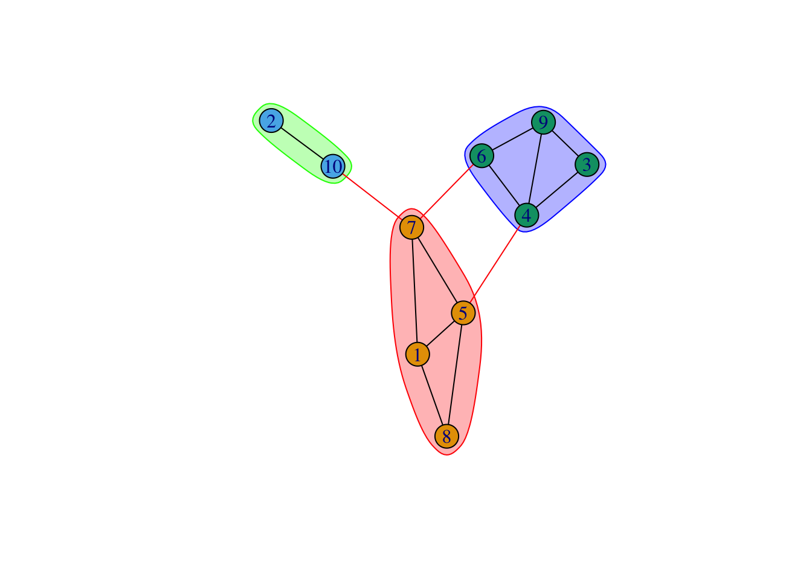
Placeholder (you should not see this)
Homophily
One of the main findings across several studies is the concept of homophily: the idea that people tend to relate more to others that they perceive similar to them in some way.
A great example is the political homophily: people tend to relate more with people that share their political beliefs. For example, the figure below shows the Twitter network of Argentina.
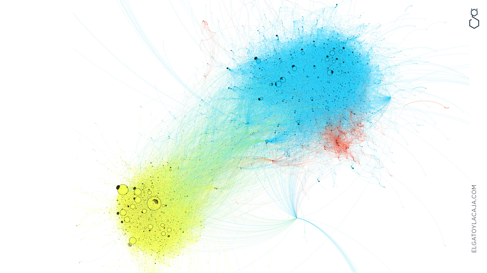
Twitter US also shows a similar split between democrats and republicans.
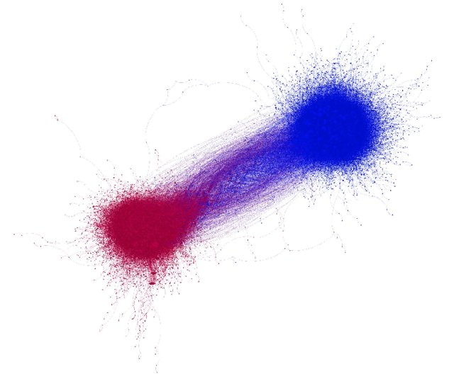
To measure homophily, we can also use the metric of modularity, but instead of measuring the groups built as a community detection algorithm, we use it with taking the nodes grouped by an attribute attached to each one of them (e.g. democrat or republican).